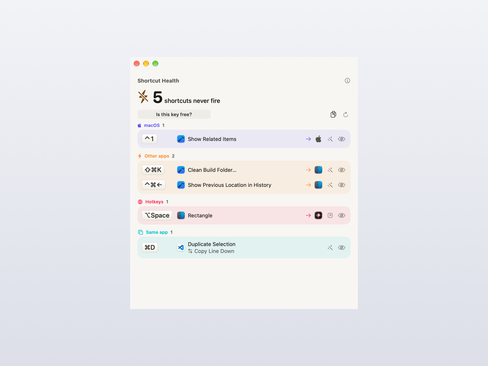

HotkeyClash is a free, open-source app whose one job is finding keyboard shortcuts that collide on your Mac. Keysi's Shortcut Health does a similar scan, also free, inside a shortcut viewer and coach. If open source matters most, use HotkeyClash. This page is about the rest.
Compared against HotkeyClash's own site on 2026-11-26.
HotkeyClash, by Wunderlandmedia, is free and GPL-2.0 licensed (the code is on GitHub). It needs macOS 14 or later, and runs on Apple silicon and Intel. It reads every running app's menu bar with Accessibility, parses Karabiner-Elements and skhd configs, and reads the macOS system shortcuts. Then it sorts what it finds into definite conflicts (two global hotkeys on one key) and potential conflicts (a global hotkey over an app's menu shortcut), and explains which app wins. It's small and native, makes no network requests, keeps nothing once you quit, and installs from a DMG or a Homebrew tap. Its site says on purpose that it reports collisions and doesn't edit shortcuts.

Shortcut Health is free, with no trial, time limit or account. It scans the menus of every running app, plus the apps whose menus Keysi has already read for you. It reads the macOS system shortcuts, the App Shortcuts you set in System Settings, and global hotkeys from Raycast, Rectangle, Karabiner-Elements, skhd and Hammerspoon. Each collision gets one line saying who wins. You can press any key combination to see everything Keysi can see that claims it, hide a collision you've accepted, and copy the report as Markdown. It opens from the menu bar menu or the System Shortcuts window. Hotkeys from apps it doesn't read yet, such as Alfred, Keyboard Maestro or BetterTouchTool, won't show up. HotkeyClash doesn't read those either (checked 2026-11-26).
Keysi is closed source. If that matters to you, that is a fair reason to pick HotkeyClash. What Keysi offers instead is a plain account of what it does on your Mac, on its security page.
| Feature | Keysi | HotkeyClash |
|---|---|---|
| Price | Shortcut Health scan free, with no trial; Pro $14.99 once | Free |
| Source | Closed source (see security) | Open source, GPL-2.0 |
| Requires | macOS 14 or later | macOS 14 or later |
| Running apps' menus | Yes, plus apps Keysi has read before | Yes |
| macOS system shortcuts | Yes | Yes |
| Apps that aren't running | Yes, for apps Keysi has read before | No, it scans running apps |
| Global hotkey apps read | Raycast, Rectangle, Karabiner-Elements, skhd, Hammerspoon | Karabiner-Elements, skhd; more planned |
| Says which app wins | Yes | Yes |
| Press a key to see who claims it | Yes, free | Planned, per its site |
| Hide a collision you've accepted | Yes, free | Not stated on HotkeyClash's site (checked 2026-11-26) |
| Export the report | Copy as Markdown, free | Not stated on HotkeyClash's site (checked 2026-11-26) |
| Fix a collision | Yes, with Pro, for menu commands: sets a macOS App Shortcut, undoable | No, by design |
| Ranked by the shortcuts you use | Yes, with Pro | Sorted by severity |
| Watch for new collisions | Yes, with Pro | Optional scan on launch |
| Shortcut viewer, cheat sheets, coaching | Yes | No, it only finds collisions |
| Install | Notarized download or Homebrew tap | DMG or Homebrew tap |
Compared on 2026-11-26 against HotkeyClash's site and its features and download pages. "Not stated" means the feature isn't mentioned there either way, not that it's absent. Check HotkeyClash directly rather than taking a competitor's word.
They're both free for the scan, they don't get in each other's way, and each takes a minute to install. Run both once and keep the one that fits.
The scan and the viewer are free, with no trial. Pro is optional.